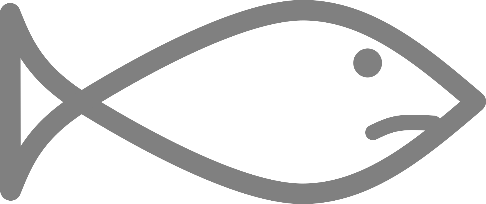

Hoofdstuk 6 Gewasbeschermingsmiddelen
- Op alle meetlocaties in glastuinbouwgebied zijn er schadelijke effecten van gewasbeschermingsmiddelen.
- Op alle locaties met agrarisch gebruik is er sprake van normoverschrijdingen.
- Het aantal normoverschrijdingen neemt over het algemeen af.
- De aanwezigheid van drie nieuwe insecticiden zonder norm is zorgelijk.

Introductie
Gewasbeschermingsmiddelen, ook wel bekend als bestrijdingsmiddelen, zijn stoffen die meestal bedoeld zijn om landbouwgewassen te beschermen tegen schade en ziektes. De meeste van deze stoffen zijn giftig en hebben als doel om bepaalde planten, schimmels of insecten te doden. Als deze stoffen in het water terecht komen kunnen ze schadelijk zijn voor het leven onder water. In het water zijn meestal veel verschillende stoffen tegelijk aanwezig waardoor totale schadelijke effect nog groter is. Daarom wordt er naar gestreefd dat deze milieuvreemde stoffen niet in het oppervlaktewater terecht komen.
Dit hoofdstuk gaat over de aanwezigheid en de schadelijkheid van gewasbeschermingsmiddelen en of deze de normen overschrijden.19
Aantal gewasbeschermingsmiddelen
Er zijn 67 gewasbeschermingsmiddelen aangetroffen in 2022.
Dat zijn er 16 minder dan gemiddeld in de voorgaande 3 jaren.
Er zijn 13 gewasbeschermingsmiddelen normoverschrijdend in 2022.
Dat zijn er 9 minder dan gemiddeld in de voorgaande 3 jaren.
Er worden heel veel verschillende gewasbeschermingsmiddelen aangetroffen en een behoorlijk deel van die stoffen overschrijdt ook de normen. Wel zijn er in 2022 minder stoffen aangetroffen en normoverschrijdend dan in voorgaande jaren. 20
Schadelijkheid
Er komt een groot aantal gewasbeschermingsmiddelen voor in het water. Hoe schadelijk zijn deze stoffen voor het waterleven? Dat is afhankelijk van de concentratie en de giftigheid van de stof. Met de concentratie en de giftigheid kan de schadelijkheid worden uitgerekend.21 Het resultaat van deze berekening is een inschatting van het aandeel van alle soorten planten en dieren dat schade oploopt (msPAF). De schade kan worden uitgedrukt in acute effecten en chronische effecten. Acute effecten zijn effecten die snel optreden zoals sterfte en verlamming. Chronische effecten zijn niet direct dodelijk, maar kunnen op lange termijn wel een grote impact hebben; het gaat dan bijvoorbeeld om verminderde groei of het niet voltooien van de levenscyclus waardoor een soort zich niet voortplant.
De schadelijkheid van gewasbeschermingsmiddelen in 2022 is in figuur 6.1 per meetlocatie weergegeven. Het is opvallend dat schadelijke effecten vrijwel alleen maar optreden op meetlocaties in het glastuinbouwgebied. Op één locatie (S_1226 in Bleiswijk) is de hoeveelheid aangetaste soorten (1 op de 3 soorten) buitengewoon hoog. Dit werd veroorzaakt door een hoge concentratie van de zeer giftige insecticide esfenvaleraat.
Figuur 6.1: Schadelijkheid van de aangetroffen gewasbeschermingsmiddelen per meetlocatie uitgedrukt als percentage aangetaste soorten (msPAF). De schadelijkheid is bepaald door per locatie van iedere stof het effect van de hoogst gemeten concentratie te bepalen.
Neemt de schade door gewasbeschermingsmiddelen toe of af? In figuur 6.2 is de ontwikkeling door de jaren weergegeven. Elk punt is de giftigheid van een afzonderlijk monster. In 2022 waren er nog steeds veel monsters met een hoge giftigheid. Situaties met een hele hoge giftigheid komen wel steeds minder voor.

Figuur 6.2: Welk aandeel van de soorten kan acute schade ondervinden van de aanwezige gewasbeschermingsmiddelen?
Elk punt is de giftigheid van een afzonderlijk monster. Monsters waar minder dan 1 op de 100.000 soorten worden aangetast zijn niet getoond. Onder het jaartal is weergegeven hoeveel monsters er in dat jaar zijn genomen.
De horizontale lijnen geven de grens aan tussen zeer hoge giftigheid en hoge giftigheid (1 op de 10) en de grens tussen hoge giftigheid en matige giftigheid. (1 op de 200).
Normoverschrijdingen
Op elke onderzochte locatie kan elk afzonderlijk gewasbeschermingsmiddel worden getoetst aan de norm. Dit leidt tot een groot aantal toetsingen (aantal locaties x aantal stoffen). Bij een gedeelte van deze toetsingen wordt een overschrijding van de norm geconstateerd. Het percentage van de toetsingen met een normoverschrijding geeft een indicatie of het aantal normoverschrijdingen verandert. In figuur 6.3 is de ontwikkeling van het percentage normoverschrijdingen weergegeven per type landgebruik. Er is te zien dat het percentage overschrijdingen over het algemeen afneemt.
Figuur 6.3: Het percentage van alle toetsingen waar een overschrijding wordt geconstateerd per type landgebruik. Met polderafvoer wordt de plaats bedoeld waar het water van een hele polder verzameld en afgevoerd wordt.
Vaak worden er meerdere gewasbeschermingsmiddelen tegelijk aangetroffen die de norm overschrijden. Om een indicatie te krijgen van de ernst van meerdere normoverschrijdingen kunnen de normoverschrijdingen per stof op één locatie bij elkaar opgeteld worden. 22 In figuur 6.4 is te zien dat de stoffen gezamenlijk op vrijwel alle meetlocaties de boven de norm uitkomen. Op één locatie is de gezamenlijke normoverschrijding tot wel 100 keer boven de norm.
Figuur 6.4: De opgetelde normoverschrijding per locatie in 2022. De kleuren geven het type landgebruik bij de meetlocatie aan. Door op een balk te klikken is de top 5 van overschrijdende stoffen te zien. (interactief)
Let op: de schaal is logaritmisch vanwege grote verschillen in overschrijdingsfactoren.
Niet-toetsbare stoffen
Voor sommige (nieuwe) gewasbeschermingsmiddelen bestaat er nog geen norm. Als deze gewasbeschermingsmiddelen worden aangetroffen, dan kan niet worden beoordeeld hoe ernstig dat is. Het is daarom wenselijk dat er voor deze nieuwe stoffen snel een norm wordt vastgesteld.
Het is opvallend dat de nieuwe niet-toetsbare stoffen allemaal insecticiden zijn. Dit zou te maken kunnen hebben met de steeds verdergaande beperkingen voor het gebruik van de insecticide imidacloprid. Mogelijk worden deze nieuwe insecticiden gebruikt in plaats van de insecticide imidacloprid: imidacloprid mag vrijwel niet meer worden gebruikt.
| Naam | Aantal keer aangetroffen | Soort stof |
|---|---|---|
| Flupyradifuron | 11 | Insecticide |
| Cyantraniliprole | 6 | Insecticide |
| Sulfoxaflor | 2 | Insecticide |
Het meetnet voor gewasbeschermingsmiddelen is toegespitst op de gebieden waar deze stoffen naar verwachting gebruikt worden. De nadruk van het meetnet ligt daarom op het glastuinbouwgebied. In 2020 is er een gebiedsbrede screening uitgevoerd om controleren of deze verwachting juist is. Uit de screening blijkt dat gewasbeschermingsmiddelen vooral in het glastuinbouwgebied worden aangetroffen. In de Krimpenerwaard werden vrijwel geen gewasbeschermingsmiddelen aangetroffen.
Er komen steeds nieuwe gewasbeschermingsmiddelen op de markt en ook worden er nieuwe meettechnieken ontwikkeld. Het meetpakket van gewasbeschermingsmiddelen verandert hierdoor soms een beetje. Het grootste deel van het meetpakket is echter sinds 2009 ongewijzigd. Het meetpakket bestaat uit ruim 200 verschillende stoffen.↩︎Zie voor meer details: Aanwezigheid gewasbeschermingsmiddelen↩︎
Deze informatie is ongeveer voor 75% van de aangetroffen stoffen beschikbaar↩︎
Meestal is er een relatie tussen de giftigheid en de hoogte van de normoverschrijding.↩︎